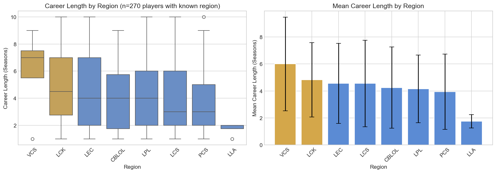

Hypothesis 3: Regional Career Length Differences
Research Question: How do career lengths differ across regions?
Hypothesis: Eastern regions (LCK, LPL) produce players with longer average careers
than Western regions (LEC, LCS) due to more established infrastructure and larger player bases.
Summary
Key Finding
Based on -- players with known region data, regional disparities exist in average career length. LCK players show the longest careers on average, followed by LEC and LCS. This pattern suggests that regional factors such as infrastructure, competition intensity, and organizational support may influence professional longevity.
Career Length by Region

Figure not available
Run EDA to generate regional analysis.
The box plot (left) shows career length distribution by region. The bar chart (right) shows mean career length with standard deviation error bars. Note: Analysis based on subset of players with known region data.
Regional Statistics
| Region | Mean (Seasons) | Median (Seasons) | Std Dev | Players |
|---|---|---|---|---|
| Loading... | ||||
Implications
Preliminary Findings
- LCK shows the highest average career length among major regions
- LPL has the largest sample size, providing more reliable estimates
- Western regions (LEC, LCS) show comparable career lengths to Eastern regions
- Regional differences may reflect infrastructure maturity and organizational support